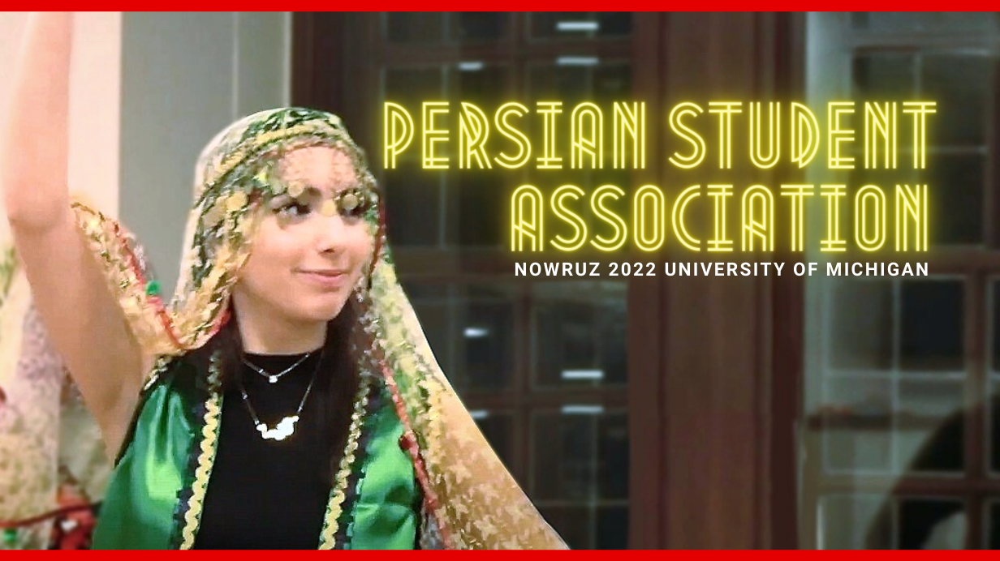

I interviewed maids and butlers from Dreams Come Chuu-an Japanese anime subculture maid cafe. Here members practice kpop and jpop dances for 6 months to perform them in maid/butler outfits at University of Michigan's anime convention Con Ja Nai. They also host a maid cafe where they serve snanks and beverages to customers. In the video members and organizers of Con Ja Nai talk about why they like being in the maid cafe and what first interested them in it.
Members of the Persian Student Association at UofM share personal memories of finding friends for life in this club as they prepare for their 25th annual Nowrus function for the first time after 2 years because of covid. They detail why being a part of this club is so important to them and how some even chose their university because of this club!
Right now I'm in the processing of editing 2 video interviews of Indian young adults sharing their upbringing and challenges growing up. I am also working on a short documentary about a popular Hindu temple decidated to the monkey God Hanuman in Kota, Rajasthan. The temple has 1000 year old origins and is next to a 7 story abandoned Rajasthani castle. They host special poojas twice a week at 11:30 pm where people travel from afar to get their demons beaten by Lord Balaji.